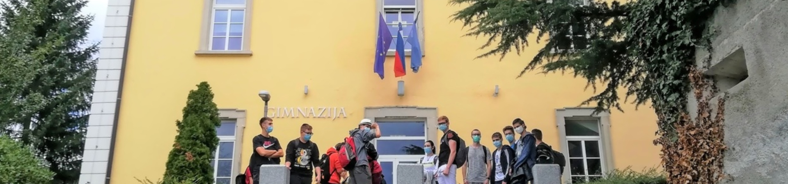

|  | |
|---|---|
|
Gimnazija Ilirska Bistrica, dislocirana enota Šolskega centra Postojna |
Gimnazija Ilirska Bistrica ima svoje prostore v prijetnem, mirnem okolju, na robu mesta in v bližini drugih izobraževalnih ustanov, javnih zavodov in organizacij (Osnovna šola Antona Žnideršiča Ilirska Bistrica, Glasbena šola Ilirska Bistrica, Knjižnica Makse Samsa Ilirska Bistrica, društvo radioamaterjev Radio klub Snežnik Ilirska Bistrica, Območno združenje Rdečega križa Ilirska Bistrica itd.). S svojim delovanjem je začela v šolskem letu 2004/05. Prva generacija je štela 46 dijakov dveh gimnazijskih oddelkov. V šolskem letu 2007/08 je maturirala prva generacija dijakov, ki se je izobraževala po programu splošne gimnazije. V šolskem letu 2009/10 se je poleg programa gimnazija začel izvajati srednješolski strokovni izobraževalni program tehnik računalništva, za katerega se je na ožjem in širšem območju pokazal večji interes. V šolskem letu 2012/13 je maturirala prva generacija dijakov, ki se je izobraževala po tem strokovnem programu. V šolskem letu 2020/21 je na šoli 171 dijakov. V prvi letnik je vpisanih 60 |